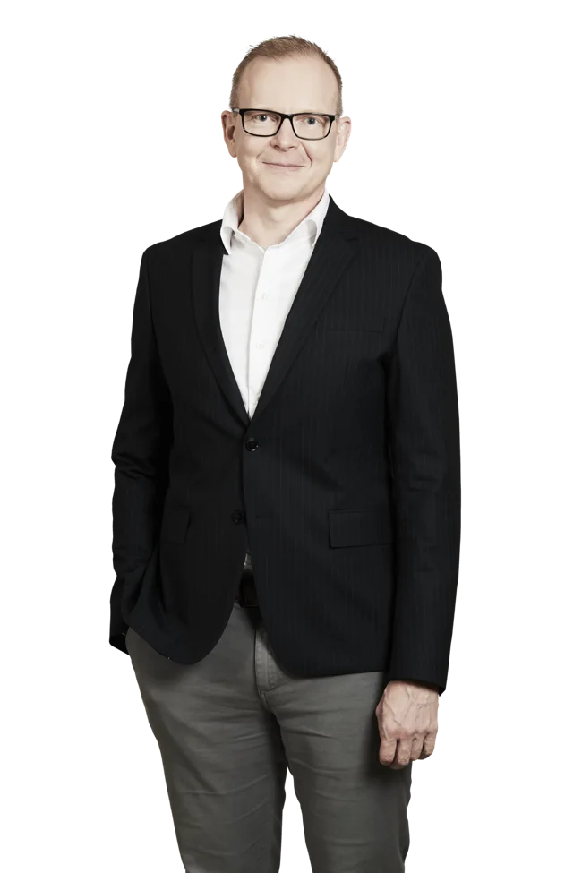

Bestyrelsesleder
Bestyrelsesledelse · strategi · governance
Den lange linje.
Og vejen derhen sammen.
Jeg bidrager til bestyrelsesarbejdet med strategisk udsyn, klare roller og blik for den arbejdsform, der gør det muligt at lykkes sammen.

Bestyrelsesleder og professor
Profil
Langsigtet retning.
Governance i praksis.
Min stærkeste erfaring ligger i bestyrelsesledelse i fonde og større organisationer, hvor mange hensyn skal samles i en langsigtet retning. Jeg har særlig erfaring med at professionalisere governance og bestyrelsens arbejdsform — fra rollefordeling, evaluering og kompetencesammensætning til succession og samarbejdet med direktionen.
Den erfaring kombinerer jeg med en forskers analytiske blik. Beslutninger skal kunne forklares, antagelser udfordres og kursen justeres, når evidensen ændrer sig. Som bestyrelsesleder lægger jeg vægt på ro, tydelige processer og en uhøjtidelig tone, der gør det lettere at få forskellige fagligheder i spil.
Erfaring
Udvalgte poster
Bestyrelseserfaring siden 2013 som medlem, vicebestyrelsesleder og bestyrelsesleder.
Bestyrelsesmedlem
Aalborg Forsyning
2026 — nuPort of Hirtshals
2026 — nuUggerly Installation
2026 — nuBørneulykkesfonden
2025 — nuTænketanken EQUALIS
2022 — nuTidligere
Spar Nord Fonden (nu Nordjyllandsfonden)
Bestyrelsesleder 2017–2026 · medlem fra 2013NOVI Innovation
2020 — 2025Rigmor Nielsens Fond
2017 — 2025Fagligt fundamentProfessor siden 2010 med forskning i strategi, iværksætteri og ledelse · Aalborg Universitet, Aarhus Universitet og NHH Norges Handelshøyskole (Bergen)Forskningshjemmeside
Kontakt
En samtale er et godt sted at begynde.
Hvis du ser et muligt match mellem en bestyrelsesopgave og min erfaring, hører jeg gerne fra dig.
md@msdahl.comLinkedIn